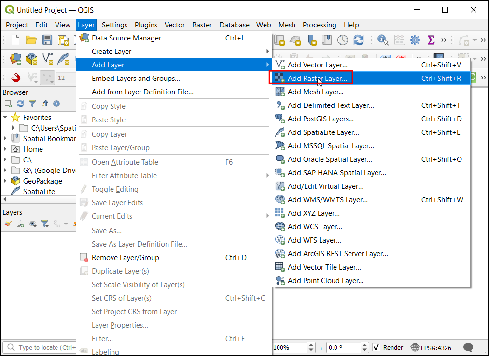
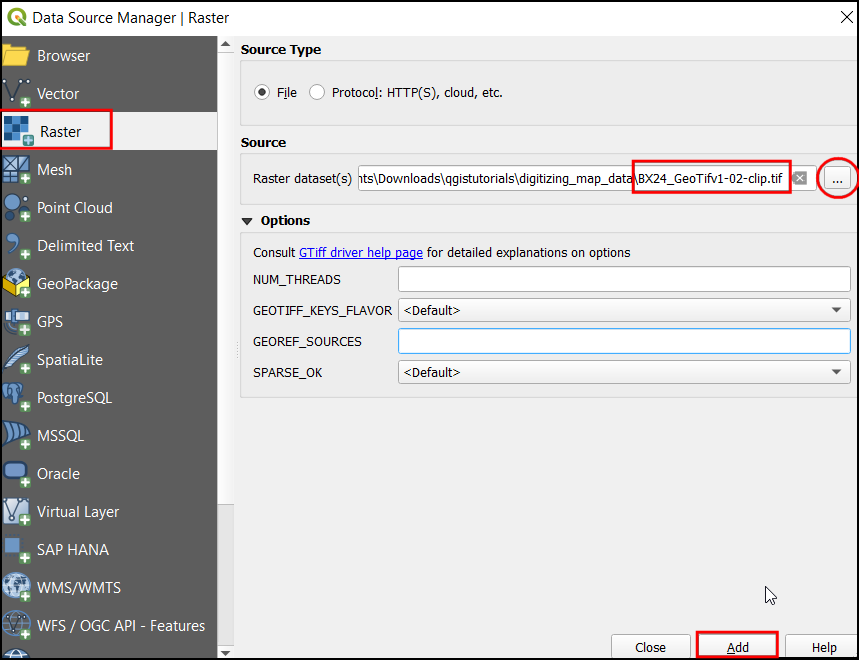
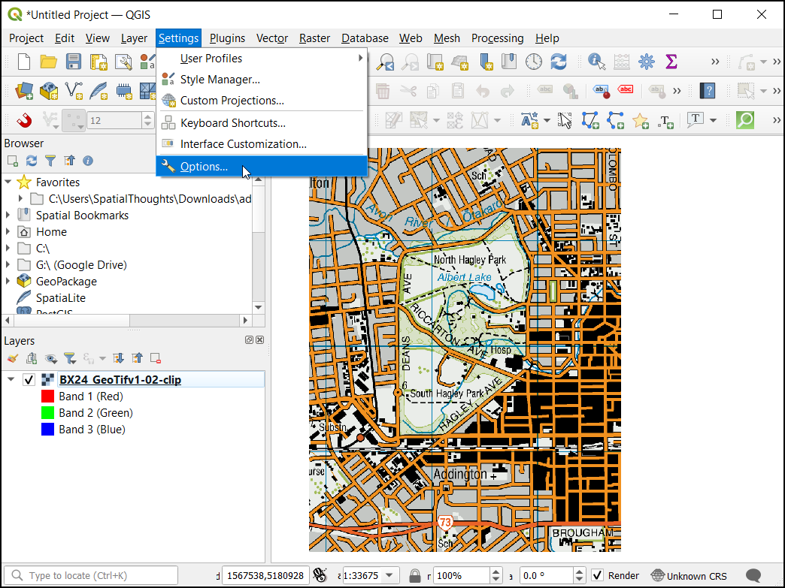
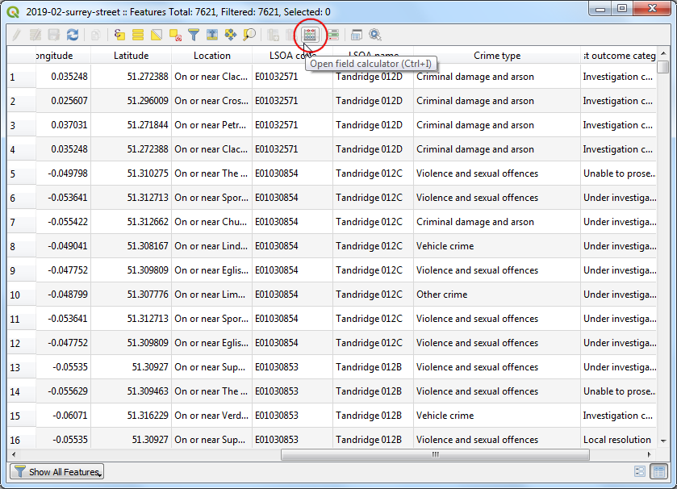
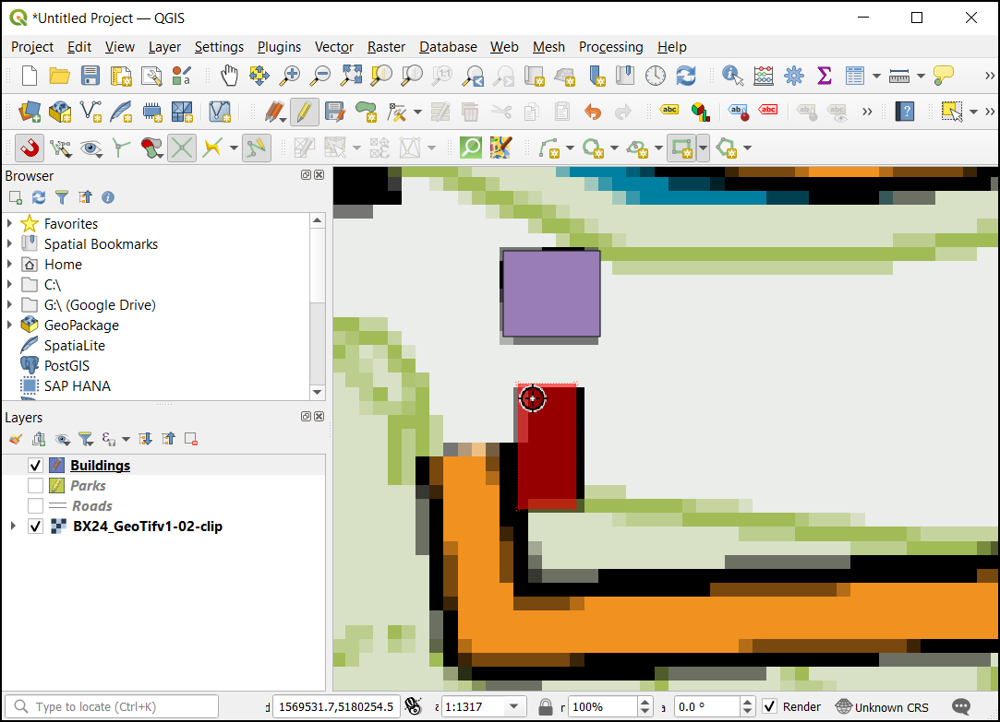
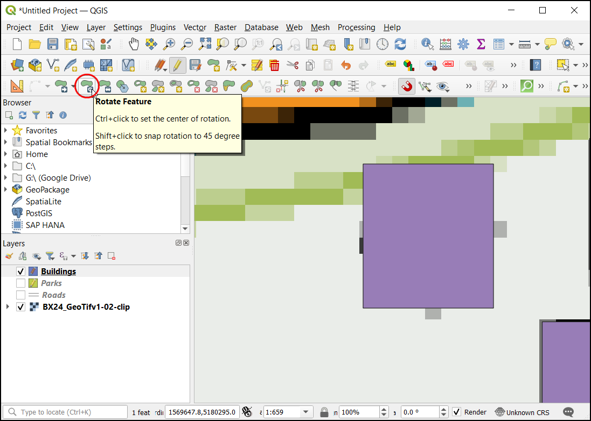

رقومی کردن داده های نقشه (QGIS3)¶
Digitizing is one of the most common tasks a GIS Specialist has to do. Often a large amount of GIS time is spent digitizing raster data to create vector layers that you use in your analysis. QGIS has powerful on-screen digitizing and editing capabilities that we will explore in this tutorial.
نمای کلی تمرین¶
ما از یک نقشه توپوگرافی رستری استفاده خواهیم کرد و چندین لایه برداری را که نمایانگر عارضه های اطراف پارک هستند ، ایجاد خواهیم کرد.
سایر مهارت های شما می آموزید¶
ایجاد هرم برای مجموعه داده های بزرگ رستریبرای سرعت بخشیدن به عملیات بزرگنمایی و تغییر مکان.
Create and edit GeoPackage.
اخذ داده¶
وبگاه اطلاعات اراضی نیوزلند Land Information New Zealand (LINZ) نقشه های رستری توپوگرافی با مقیاس1:50000 برای جزیره اصلی نیوزلند و جزایر چاتمان تهیه می کند.
فایل GeoTIFF Image file از پایگاه وبگاه Christchurch Topo50 map download page دانلود نمایید.
برای راحتی کار ، می توانید مستقیماً یک کپی از مجموعه داده را از لینک زیر بارگیری کنید:
منابع داده [LINZ]
مراحل¶
In QGIS, let's load the image file. Go to .

In the Data Source Manager dialog select Raster. Under Source click on the
...and locate the downloadedBX24_GeoTifv1-02.tifand click Open. Then click Add followed by Close.

This is a large raster file, and you may notice that when you zoom or pan around the map, the map takes a little time to render the image. QGIS offers a simple solution to make rasters load much faster by using Image Pyramids. QGIS creates pre-rendered tiles at different resolutions, and these are presented to you instead of the full raster. This makes map navigation snappy and responsive. Right-click the
BX24_GeoTifv1-02layer and choose Properties.

In the Layer Properties dialog, Choose the Pyramids tab. Hold the Ctrl key and select all the resolutions offered in the Resolutions panel. Leave other options to defaults and click Build pyramids.
Once the process finishes, the dialog box will show the pyramids without a cross. This indicates the Image Pyramids build is completed. Click OK.

قبل از شروع ، باید پیش فرض ها در ** گزینه های رقومی سازی Digitizing Options* * را تنظیم کنیم . به منوی . برویید.

Select the Digitizing tab in the Options dialog. Check the Enable snapping by default under Snapping section. In Default snap mode choose Vertex. This will allow you to snap to the nearest vertex. I also prefer to set the Default snapping tolerance and Search radius for vertex edits in pixels instead of map units. This will ensure that the snapping distance remains constant regardless of zoom level. Depending on your computer screen resolution, you may choose an appropriate value. Click OK.

Now we are ready to start digitizing. We will first create a road layer and digitize the roads around the park area. Click icon from Panels. A GeoPackage is an open, non-proprietary, platform-independent, and standards-based data format for a geographic information system implemented as an SQLite database container. This makes it much easier to move it around instead of a bunch of shapefiles. In this tutorial, we create a couple of polygon layers and a line layer so that a GeoPackage will be better suited. You can always load a GeoPackage and export layers as a shapefile or any other format you want.

In the New GeoPackage Layer dialog, click the ... button and save a new GeoPackage database named
digitizing.gpkg. Choose the Table name asRoadsand selectLineStringas the Geometry type. The base topographic map is theEPSG:2193 - NZGD 2000CRS.

When creating a GIS layer, you must decide on each feature's attributes. Since this is a road layer, we additionally will have two primary attributes - Name and Class. In New Field Enter
Nameof the type Text data, with50as Maximum length and click Add to attribute list. Now create a new attributeClassof the type Text data, with50as Maximum length. Click OK

پس از باز نمودن لایه "Roads" ، روی دکمه Toggle Editing کلیک کنید تا لایه در حالت ویرایش قرار گیرد.

روی دکمه Add Line Feature کلیک کنید. برای افزودن نقطه جدید بر روی پنجره نقشه اصلی کلیک کنید. نقاط جدید را به همراه عارضه جاده اضافه کنید. وقتی بخش جاده را رقومی کردید ، برای پایان دادن ویرایش عارضه کلیک راست کنید.

توجه
برای بزرگنمایی یا کوچک کردن هنگام رقومی کردن ، می توانید از حرکت ماوس استفاده کنید. همچنین می توانید دکمه پیمایش را نگه دارید و ماوس را برای چرخاندن حرکت دهید.
After you right-click to end the feature, you will get a pop-up dialog called Road - Feature Attributes. Here you can enter attributes of the newly created feature. Skip entering any value for fid as it is a sequential id that will be autogenerated. Enter the road name as it appears on the topo map. Optionally, assign a Road Class value as well. Click OK.

The default style of the new line layer is a thin line. Let's change it to better see the digitized features on the canvas. Select the
Roadslayer and click Layer Styling Panel.

In the Layer Styling Panel, search for different road layer styles. Select
topo road. Click OK.

Now the road layer will be clearly visible. If you are satisfied with the work, click Save Layer Edits button to save the changes.

Before we digitize the remaining roads, it is essential to update some other important snap settings to create an error-free layer. Right-click on any space on the toolbar area and activate the Snapping toolbar.

Now an Enable Snapping (Magnet Icon) will appear on the panel. Click on it to enable it and select All Layers and choose
Open Snapping Options...

In the Snapping options dialog, click the Snapping on Intersection, which allows you to snap on an intersection of a background layer.

Now you can click Add feature button and digitize other roads around the park. Make sure to click Save Edits after adding a new feature to save your work. A helpful tool to help you digitize is the Vertex Tool. Click the Vertex Tool button and select
Vertex Tool (Current Layer).
Once the node tool is activated, click on any feature to show the vertices. Click on any vertex to select it. The vertex will change the color once it is selected. Now you can click and drag your mouse to move the vertex. This is useful when you want to make adjustments after the feature is created. You can also delete a selected vertex by clicking the Delete key. (Option+Delete on a mac)

هنگامی که رقومی کردن تمام جاده ها به پایان رسید ، روی دکمه Toggle Editing کلیک کنید. برای ذخیره دکمه Save کلیک کنید.

Now we will create another layer to digitize the parks as polygons. Click icon from Panels. In the New GeoPackage Layer dialog, click the ... button and select the GeoPackage database named
digitizing.gpkg. Name the new layer as an attribute calledParks. SelectMultiPolygonas the Type. The base topographic map is theEPSG:2193 - NZGD 2000CRS. Click OK. In New Field EnterName, and the type as Text data, with50as Maximum length and click :guilabel:` Add to Fields List.`. Click OK.

توجه
Polygon vs Multi-Polygon
Polygon - Planar Surface defined by 1 exterior boundary and 0 or more interior boundaries. Each interior boundary defines a hole in the Polygon.
Multi-Polygon - It is used to represent areas with holes inside or consisting of multiple disjoint areas. For eg, 3 discontinuous polygons can be drawn and grouped as a single feature.
A pop-up dialog will appear. Select the Add New Layer button.

Now select layer
Parksthen clickroad Toggle Editing and click the Add feature button and click on the map canvas to add a polygon vertex. Digitize the polygon representing the park. Make sure you snap to the road's vertices so there are no gaps between the park polygons and road lines. Right-click to finish the polygon.

نام پارک را در پنجره بازشو Parks - Feature Attributes وارد کنید.

Now digitize the upper region of the park. Enter the park name and save the changes.

Now, before digitizing the inner polygon lets set settings that can ease this work. Multi-Polygon layers offer another useful setting called Avoid intersections of new polygons. Select Enable Snapping (Magnet Icon), click on it to enable it, and click All Layers and select
Advanced Configuration.

Click the
Avoid Overlap on Active layersbutton in the snapping toolbar.

Now in Edit Advanced Configuration, select the Units as
pixels.

Check the box in the Avoid Overlap column in the row for the
Parkslayer.

برای افزودن یک چند ضلعی ، روی Add feature t کلیک کنید. با تنظیم Avoid Overlap، بدون نگرانی از اینکه دقیقاً به چند ضلعی های همسایه همپ.شانی داشته باشد ، می توانید یک چند ضلعی جدید را به سرعت رقومی کنید.

Right-click to finish the polygon and enter the attributes. Magically the new polygon is shrunk and snapped exactly to the boundary of the neighboring polygons! This is very useful when digitizing complex boundaries where you need not be precise and still have topologically correct polygon. Click Toggle Editing to finish editing the
Parkslayer.

Now it is time to digitize a buildings layer. Create a new polygon layer named
Buildingsby clicking icon from Panels. Set the Buildings and MuiltiPolygon. Choose the CRS asEPSG:2193 - NZGD 2000. Click OK.

Once the
Buildingslayer is added, turn off theParksandRoadslayers to make the base topo map visible. Select theBuildingslayer and click Toggle Editing.

Digitizing buildings can be a cumbersome task, and also, it is challenging to add vertices manually so that the edges are perpendicular and form a rectangle. We will use a QGIS toolbar called Shape Digitizing to help with this task. Right-click on any empty space on the toolbar area and activate the
Shape Digitizing Toolbar.

Enable editing by pressing the pencil icon Toggle Editing.

Now under Add Rectangle dropdown select Add Rectangle from Extent button.

Zoom to an area with the buildings. Click and drag the mouse to draw a perfect rectangle. Similarly, add the remaining buildings.

You will notice that some buildings are not vertical, and we will need to draw a rectangle at an angle to match the building footprint. Under Add Rectangle dropdown select Add Rectangle from Center and a Point button.

Zoom to an area of diamond-shaped buildings. Click on the center to drop a point and drag the mouse to draw a rectangle.

باید این مستطیل را بچرخانیم تا با تصویر موجود در نقشه topo مطابقت داشته باشد. ابزار چرخش در نوار ابزار ** Advanced Digitizing ** موجود است. روی قسمت خالی قسمت نوار ابزار کلیک راست کرده و نوار ابزار Advanced Digitizing را فعال کنید.

Click the Rotate Feature button.

Use the Select Single feature tool to select the polygon you want to rotate. Once the Rotate Feature tool is activated, you will see crosshairs at the center of the polygon. Click exactly on that crosshairs and drag the mouse while holding the left-click button. A preview of the rotated feature will appear. Let go of the mouse button when the polygon aligns with the building footprint.

Save the layer edits and click Toggle Editing once you finish digitizing all buildings. You can drag the layers to change their order of appearance. The digitizing task is now complete. You can play with the styling and labeling options in layer properties to create a nice-looking map from the data you created.

If you want to give feedback or share your experience with this tutorial, please comment below. (requires GitHub account)